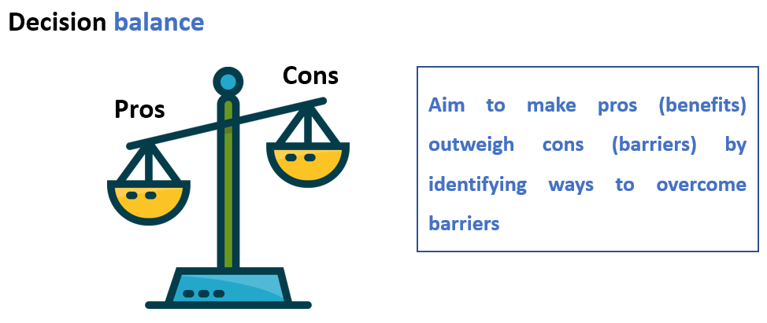
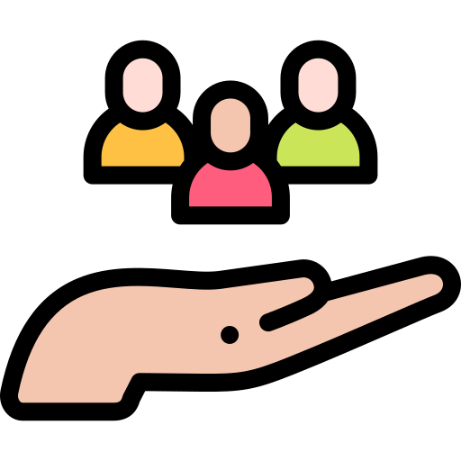

Decisions…decisions….they’re everywhere and time in a day is limited! Your journey with the CareFit app is based around YOUR needs and what’s important to YOU. There is a lot of scientific evidence that says some habits are easier to make once we know that they are truly worthwhile.
To get there, we will shortly ask you to collate a comparison of the pros and cons of being more active. This record will reflect your personal circumstances and help you to become more active- you can come back to it whenever you need.
Your aim is to try and make the pros greater than the cons which will increase your motivation to be more physically active.

The number and strength of relationships we have affect our mental and physical wellbeing. The benefits of social connections and good mental health are numerous. Proven links include lower rates of anxiety and depression, higher self-esteem, greater empathy, and more trusting and cooperative relationships. Strong, healthy relationships can also help to strengthen your immune system, help you recover from disease, and may even lengthen your life!
To help you with decision balance, we now ask you to make a list of your pros and cons in relation to your physical activity. In the second part of this activity we will then ask you to reflect on what solutions might work for you to address your barriers (cons) to physical activity.
You can come back to this information as many times as you need to- we would encourage you to come back to this page if you are needing motivation when trying to realise your physical activity goals.